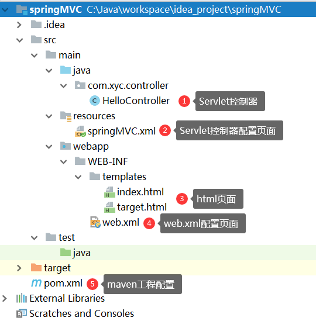
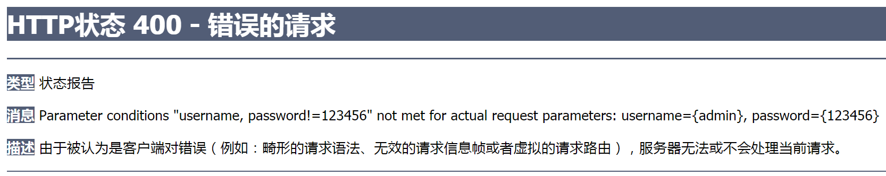
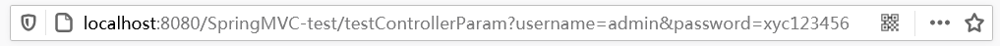

(1)MVC是一种软件架构的思想，将软件按照模型、视图、控制器来划分。
(2)M：Model，模型层，指工程中的JavaBean，作用是处理数据。
JavaBean分为两类：
- 一类称实体类Bean：专门存储业务数据的，如Student、User等；
- 一类称业务处理Bean：指Service或Mapper对象，专门用于处理业务逻辑和数据访问。
(3)V：View，视图层，指工程中的html或jsp等页面，作用是与用户进行交互，展示数据。
(4)C：Controller，控制层，指工程中的servlet，作用是接收请求和响应浏览器。
(5)MVC的工作流程：
(1)SpringMVC是Spring的一个后续产品，是Spring的一个子项目。
(2)SpringMVC是Spring为表述层开发提供的一整套完备的解决方案。在表述层框架历经Strust、WebWork、Strust2等诸多产品的历代更迭之后，目前业界普遍选择了SpringMVC作为JavaEE项目表述层开发的首选方案。
三层架构分为表述层(或表示层)、业务逻辑层、数据访问层，表述层表示前台页面和后台servlet。
SpringMVC的特点主要有：

(1)使用idea创建maven工程时，如果没有使用模板，可能需要手动添加打包方式。
<packaging>war</packaging>(2)添加依赖：见完整代码。
(3)完整代码：
<project xmlns="http://maven.apache.org/POM/4.0.0" xmlns:xsi="http://www.w3.org/2001/XMLSchema-instance" xsi:schemaLocation="http://maven.apache.org/POM/4.0.0 http://maven.apache.org/xsd/maven-4.0.0.xsd"> <modelVersion>4.0.0</modelVersion> <groupId>com.xyc</groupId> <artifactId>springMVC</artifactId> <version>1.0-SNAPSHOT</version> <!-- 添加打包方式 --> <packaging>war</packaging>
<dependencies> <!-- SpringMVC --> <dependency> <groupId>org.springframework</groupId> <artifactId>spring-webmvc</artifactId> <version>5.3.1</version> </dependency> <!-- 日志 --> <dependency> <groupId>ch.qos.logback</groupId> <artifactId>logback-classic</artifactId> <version>1.2.3</version> </dependency> <!-- ServletAPI --> <dependency> <groupId>javax.servlet</groupId> <artifactId>javax.servlet-api</artifactId> <version>3.1.0</version> <scope>provided</scope> </dependency> <!-- Spring5和Thymeleaf整合包 --> <dependency> <groupId>org.thymeleaf</groupId> <artifactId>thymeleaf-spring5</artifactId> <version>3.0.12.RELEASE</version> </dependency> </dependencies></project>
(1)请求控制器：虽然前端控制器对浏览器发送的请求进行了统一的处理，但是具体的请求有不同的处理过程，因此需要创建处理具体请求的类，即请求控制器。
(2)请求控制器中的方法：请求控制器中每一个处理请求的方法成为控制器方法。
(3)请求控制器的创建方式：因为SpringMVC的控制器由一个POJO(普通的Java类)担任，因此需要通过@Controller注解将其标识为一个控制层组件，交给Spring的IoC容器管理，此时SpringMVC才能够识别控制器的存在。
package com.xyc.controller;
import org.springframework.stereotype.Controller;import org.springframework.web.bind.annotation.RequestMapping;
public class HelloController { ("/") // 设置请求的路径 public String indexController() { // 设置视图名称 return "index"; // 跳转到index页面 }
("/hello") public String hello() { return "target"; // 跳转到target页面 }}
<web-app xmlns="http://xmlns.jcp.org/xml/ns/javaee" xmlns:xsi="http://www.w3.org/2001/XMLSchema-instance" xsi:schemaLocation="http://xmlns.jcp.org/xml/ns/javaee http://xmlns.jcp.org/xml/ns/javaee/web-app_4_0.xsd" version="4.0">
<!-- 配置SpringMVC的前端控制器，对浏览器发送的请求统一进行处理 --> <servlet> <servlet-name>springMVC</servlet-name> <servlet-class>org.springframework.web.servlet.DispatcherServlet</servlet-class> <!-- 通过初始化参数指定SpringMVC配置文件的位置和名称 --> <init-param> <!-- contextConfigLocation为固定值 --> <param-name>contextConfigLocation</param-name> <!-- classpath:表示从类路径查找，例如maven工程中的src/main/resources --> <param-value>classpath:springMVC.xml</param-value> </init-param> <!-- 初始化时间提前到服务器启动时 --> <load-on-startup>1</load-on-startup> </servlet> <servlet-mapping> <servlet-name>springMVC</servlet-name> <!-- 设置前端控制器的能处理的请求路径 --> <url-pattern>/</url-pattern> </servlet-mapping></web-app>(1)设置前端控制器初始化的时间：DispatcherServlet作为框架的核心组件，在启动过程中有大量的初始化操作要做，而这些操作放在第一次请求时才执行会严重影响访问速度，因此需要通过<load-on-startup>标签将初始化时间提前到服务器启动时。
<!-- 初始化时间提前到服务器启动时 --><load-on-startup>1</load-on-startup>(2)请求路径：设置SpringMVC的核心控制器所能处理的请求的请求路径
在真实的开发时，首先要配置编码过滤器，防止出现post请求中文乱码。而get请求的中文乱码在tomcat服务器的配置文件server.xml中设置。
(1)添加thymeleaf名称空间：
<html lang="en" xmlns:th="http://www.thymeleaf.org">(2)完整代码：
<html lang="en" xmlns:th="http://www.thymeleaf.org"><head> <meta charset="UTF-8"> <title>index页面</title></head><body> <a th:href="@{/hello}">HelloWorld</a><br/></body></html>
<beans xmlns="http://www.springframework.org/schema/beans" xmlns:xsi="http://www.w3.org/2001/XMLSchema-instance" xmlns:context="http://www.springframework.org/schema/context" xsi:schemaLocation="http://www.springframework.org/schema/beans http://www.springframework.org/schema/beans/spring-beans.xsd http://www.springframework.org/schema/context http://www.springframework.org/schema/context/spring-context.xsd"> <!-- 自动扫描包 --> <context:component-scan base-package="com.xyc.controller"/> <!-- 配置Thymeleaf视图解析器 --> <bean id="viewResolver" class="org.thymeleaf.spring5.view.ThymeleafViewResolver"> <property name="order" value="1"/> <property name="characterEncoding" value="UTF-8"/> <property name="templateEngine"> <bean class="org.thymeleaf.spring5.SpringTemplateEngine"> <property name="templateResolver"> <bean class="org.thymeleaf.spring5.templateresolver.SpringResourceTemplateResolver"> <!-- 视图前缀 --> <property name="prefix" value="/WEB-INF/templates/"/> <!-- 视图后缀 --> <property name="suffix" value=".html"/> <property name="templateMode" value="HTML5"/> <property name="characterEncoding" value="UTF-8"/> </bean> </property> </bean> </property> </bean></beans>
创建Tomcat运行实例，启动项目。
(1)浏览器发送请求，若请求地址符合前端控制器的url-pattern，该请求就会被前端控制器DispatcherServlet处理。
(2)前端控制器会读取SpringMVC的核心配置文件，通过扫描组件找到控制器，将请求地址和控制器中@RequestMapping注解的value属性值进行匹配。
(3)若匹配成功，该注解所标识的控制器方法就是处理请求的方法。
(4)处理请求的方法需要返回一个字符串类型的视图名称，该视图名称会被视图解析器解析，加上前缀和后缀组成视图的路径，通过Thymeleaf对视图进行渲染，最终转发到视图所对应页面。
(1)功能：
@RequestMapping的作用就是将请求和处理请求的控制器方法关联起来，建立映射关系。SpringMVC接收到指定的请求，就会来找到在映射关系中对应的控制器方法来处理这个请求。
(2)@RequestMapping的位置：
("/test")public class RequestMappingController { // 此时请求映射所映射的请求的请求路径为：/test/testRequestMapping ("/testRequestMapping") public String testRequestMapping() { return "success"; }}
(1)作用：@RequestMapping注解的value属性通过请求地址匹配请求映射。
(2)类型：@RequestMapping注解的value属性是一个字符串类型的数组，表示该请求映射能够匹配多个请求地址所对应的请求。
(3)说明：@RequestMapping注解的value属性必须设置，至少通过请求地址匹配请求映射。
(value = {"/testRequestMapping", "/test"})public String testRequestMapping() { return "success";}
(1)作用：@RequestMapping注解的method属性通过请求方式匹配请求映射。
(2)类型：@RequestMapping注解的method属性是一个RequestMethod类型的数组，表示该请求映射能够匹配多种请求方式的请求。
(3)说明：若当前请求的请求地址满足请求映射的value属性，但是请求方式不满足method属性，则浏览器报错405：Request method 'POST' not supported。
不设置method属性表示所有请求方式都能匹配，设置后表示只能匹配该请求方式。
( value = {"/testRequestMapping", "/test"}, method = {RequestMethod.GET, RequestMethod.POST})public String test() { return "success";}(4)@RequestMapping派生注解：对于处理指定请求方式的控制器方法，SpringMVC中提供了@RequestMapping的派生注解
常用的请求方式：get、post、put、delete。
- 目前浏览器只支持get和post，若在form表单提交时，为method设置了其他请求方式的字符串(put或delete)，则按照默认的请求方式get处理。
- 若要发送put和delete请求，则需要通过Spring提供的过滤器HiddenHttpMethodFilter，参考RESTful部分。
- 超链接
<a />标签发送的是get请求。
(1)作用：@RequestMapping注解的params属性通过请求参数匹配请求映射。
(2)类型：@RequestMapping注解的params属性是一个字符串类型的数组，可以通过四种表达式设置请求参数和请求映射的匹配关系：
(3)小案例：
<a th:href="@{/testParma(username='admin', password=123456)">请求参数</a>http://localhost:8080/SpringMVC-test/testParma?username=admin&password=123456( value = "/testParma", method = {RequestMethod.GET, RequestMethod.POST}, params = {"username", "password!=123456"})public String testParma() { return "success";}(4)说明：若当前请求满足@RequestMapping注解的value和method属性，但是不满足params属性，此时页面回报错400：

(1)作用：headers属性通过请求头信息匹配请求映射。
(2)类型：headers属性是一个字符串类型的数组，可以通过四种表达式设置请求头信息和请求映射的匹配关系：
若当前请求满足@RequestMapping注解的value和method属性，但是不满足headers属性，此时页面显示404错误，即资源未找到。
模糊匹配：SpringMVC支持ant风格的路径。
(1)可以使用以下全局模式和通配符来映射请求：
在使用**时，只能使用/**/xxx的方式(即字符**的前后不能有字符)。
(2)示例：这个可以匹配例如/aa/test的请求。
("/a?/test")public String test(){ return "success";}(3)示例：这个时候，/**aa/test与/*aa/test是一样的，并不是表示多层路径。
("/**aa/test")public String test() { return "success";}(4)示例：多层路径的匹配。此时/**/test与**/test是一样的，但是建议使用/**/test。
("/**/test")public String test() { return "success";}
(1)原始方式传递参数：/testParma?username=admin&password=123456
http://localhost:8080/SpringMVC-test/testParma?username=admin&password=123456(2)RESTful方式：/testParma/admin/123456
SpringMVC支持路径中的占位符，SpringMVC路径中的占位符常用于RESTful风格中，当请求路径中将某些数据通过路径的方式传输到服务器中，就可以在相应的@RequestMapping注解的value属性中通过占位符{xxx}表示传输的数据，在通过@PathVariable注解，将占位符所表示的数据赋值给控制器方法的形参。
(3)小测试：
<a th:href="@{/testParma/admin/123456}">测试RESTful风格的参数传递</a>("/testParma/{username}/{password}")public String testRest( ("username") String username, ("password") String password) { System.out.println("username: " + username + ", password: " + password); return "success";}
(1)核心：将HttpServletRequest作为控制器方法的形参，此时HttpServletRequest类型的参数表示封装了当前请求的请求报文的对象。
| 对象 | 存数据 | 取数据 | 删除数据 |
|---|---|---|---|
| Map | put() | get() | remove() |
| 域对象 | setAttribute() | getAttribute() | removeAttribute() |
(2)HTML代码：
<a th:href="@{/testServletAPI(username='admin', password=123456)}">获取请求参数</a><a th:href="@{/testServletAPI?username=admin&password=123456}">获取请求参数</a>两种方式传递请求参数都可以，以下就写一种。
(3)控制器代码：
("/testServletAPI")public String testParam(HttpServletRequest request) { String username = request.getParameter("username"); String password = request.getParameter("password"); System.out.println("username:" + username + ",password:" + password); return "success";}(4)输出：username:admin,password:1234567
(1)方式：在控制器方法的形参位置，设置和请求参数同名的形参，当浏览器发送请求，匹配到请求映射时，在DispatcherServlet中就会将请求参数赋值给相应的形参。
(2)HTML代码：
<a th:href="@{/testControllerParam(username='admin', password='xyc123456')}">获取请求参数</a><a th:href="@{/testControllerParam(username='admin', password=xyc123456)}">获取请求参数</a>注意：上一行链接中username和password的值都是字符串，而后一行链接的password的值不是字符串形式，但是两者被浏览器处理后最终都是同一个请求链接。

(3)控制器代码：
("/testControllerParam")public String testParam(String username, String password) { System.out.println("username:" + username + ",password:" + password); return "success";}(4)输出：username:admin,password:xyc123456
若请求中有多个同名的请求参数，可以在控制器方法的形参中设置字符串数组或者字符串类型的形参接收此请求参数。
<a th:href="@{/testControllerParam(username='admin', password='xyc123456', username='xyc', password='123456')}">同名参数</a>(1)若使用字符串数组类型的形参，此参数的数组中包含了每一个数据。
// 数组接收同名参数("/testControllerParam")public String testParam(String[] username, String[] password) { System.out.println("username:" + Arrays.toString(username) + ",password:" + Arrays.toString(password)); return "success";}(2)输出：username:[admin, xyc],password:[xyc123456, 123456]
<a th:href="@{/testControllerParam(username='admin', password='xyc123456', username='xyc', password='123456')}">同名参数</a>(1)若使用字符串类型的形参，此参数的值为每个数据中间使用逗号拼接的结果。
// 字符串接收同名参数("/testControllerParam")public String testParam(String username, String password) { System.out.println("username:" + username + ",password:" + password); return "success";}(2)输出：username:admin,xyc,password:xyc123456,123456
(1)注解的作用：@RequestParam是将请求参数和控制器方法的形参创建映射关系。
(2)属性：@RequestParam注解一共有三个属性：
value：指定为形参赋值的请求参数的参数名。
required：设置是否必须传输此请求参数，默认值为true。
defaultValue：不管required属性值为true或false，当value所指定的请求参数没有传输或传输的值为""时，则使用默认值为形参赋值。
(1)注解的作用：@RequestHeader是将请求头信息和控制器方法的形参创建映射关系。
(2)属性：@RequestHeader注解共有三个属性：value、required、defaultValue，用法同@RequestParam。
(1)注解的作用：@CookieValue是将cookie数据和控制器方法的形参创建映射关系
(2)属性：@CookieValue注解共有三个属性：value、required、defaultValue，用法同@RequestParam。
("/testParam")public String testParam( // 将请求的user_name字段的值赋值给username参数 (value = "user_name", required = false, defaultValue = "hehe") String username, String password, String[] hobby, (value = "sayHaha", required = true, defaultValue = "haha") String host, ("JSESSIONID") String JSESSIONID) { System.out.println("username:" + username + ",password:" + password + ",hobby:" + Arrays.toString(hobby)); System.out.println("host:" + host); System.out.println("JSESSIONID:" + JSESSIONID); return "success";}
(1)方式：可以在控制器方法的形参位置设置一个实体类类型的形参，此时若浏览器传输的请求参数的参数名和实体类中的属性名一致，那么请求参数就会为此属性赋值。
(2)HTML代码：
<form th:action="@{/testpojo}" method="post"> 用户名：<input type="text" name="username"><br> 密码：<input type="password" name="password"><br> 性别：<input type="radio" name="sex" value="男">男 <input type="radio" name="sex" value="女">女<br> 年龄：<input type="text" name="age"><br> 邮箱：<input type="text" name="email"><br> <input type="submit"></form>(3)控制器代码：
("/testpojo")public String testPOJO(User user) { System.out.println(user); return "success";}User实体类省略了。
(1)解决获取请求参数的乱码问题，可以使用SpringMVC提供的编码过滤器CharacterEncodingFilter，但是必须在web.xml中进行注册。
(2)乱码出现的原因：编码不一致。
<!-- 配置springMVC的编码过滤器，解决post请求的中文乱码问题 --><filter> <filter-name>CharacterEncodingFilter</filter-name> <filter-class>org.springframework.web.filter.CharacterEncodingFilter</filter-class> <init-param> <param-name>encoding</param-name> <param-value>UTF-8</param-value> </init-param> <init-param> <param-name>forceResponseEncoding</param-name> <param-value>true</param-value> </init-param></filter><filter-mapping> <filter-name>CharacterEncodingFilter</filter-name> <url-pattern>/*</url-pattern></filter-mapping>注意：SpringMVC中处理编码的过滤器一定要配置到其他过滤器之前，否则无效。
(3)配置编码过滤器，是防止出现POST请求中文乱码。而GET请求的中文乱码在tomcat服务器的配置文件server.xml中设置。
(1)GET请求的中文乱码是由tomcat服务器可以一次性解决的。
(2)方法：打开tomcat的安装配置文件，修改Connector标签，增加URIEncoding属性值为UTF-8。
(3)文件位置：tomcat安装目录\conf\server.xml
C:\Java\tomcat\apache-tomcat-7.0.109\conf\server.xml(4)修改标签：增加URIEncoding="UTF-8"
<Connector connectionTimeout="20000" port="8080" URIEncoding="UTF-8" protocol="HTTP/1.1" redirectPort="8443"/>
(1)域对象能获取(共享)数据的原因：所用的域对象是同一个对象。
(2)以下测试中均配置了web.xml、springMVC.xml、pom.xml等环境，参考入门案例。
(1)发送请求链接的HTML页面：
<a th:href="@{/testDataServletAPI}">测试ServletAPI数据共享</a>(2)处理请求的控制器：
("/testDataServletAPI") public String testDataServletAPI(HttpServletRequest request) { request.setAttribute("testScope", "hello, ServletAPI"); return "success"; }}(3)success.html页面：
<span th:text="${testScope}"></span>
(1)发送请求链接的HTML页面：
<a th:href="@{/testModelAndView}">测试ModelAndView数据共享</a>(2)处理请求的控制器：
("/testModelAndView")public ModelAndView testModelAndView() { /** * ModelAndView有Model和View的功能 * Model主要用于向请求域共享数据 * View主要用于设置视图，实现页面跳转 */ ModelAndView mav = new ModelAndView(); // 向请求域共享数据 mav.addObject("testScope", "hello, ModelAndView"); // 设置视图，实现页面跳转 mav.setViewName("success"); return mav; // 返回的是ModelAndView对象}(3)success.html页面：
<span th:text="${testScope}"></span>
(1)发送请求链接的HTML页面：
<a th:href="@{/testModel}">测试Model数据共享</a>(2)处理请求的控制器：
("/testModel")public String testModel(Model model) { model.addAttribute("testScope", "hello, Model"); return "success";}(3)success.html页面：
<span th:text="${testScope}"></span>
(1)发送请求链接的HTML页面：
<a th:href="@{/testMap}">测试Map数据共享</a>(2)处理请求的控制器：
("/testMap")public String testMap(Map<String, Object> map) { map.put("testScope", "hello, Map"); return "success"; // 返回视图名}(3)success.html页面：
<span th:text="${testScope}"></span>
(1)发送请求链接的HTML页面：
<a th:href="@{/testModelMap}">测试ModelMap数据共享</a>(2)处理请求的控制器：
("/testModelMap")public String testModelMap(ModelMap modelMap) { modelMap.addAttribute("testScope", "hello, ModelMap"); return "success"; // 返回视图名}(3)success.html页面：
<span th:text="${testScope}"></span>
Model、ModelMap、Map类型的参数其实本质上都是BindingAwareModelMap类型的。
public interface Model {} // 接口public class LinkedHashMap<K,V> extends HashMap<K,V> implements Map<K,V> {}public class ModelMap extends LinkedHashMap<String, Object> {}public class ExtendedModelMap extends ModelMap implements Model {}public class BindingAwareModelMap extends ExtendedModelMap {}
直接使用ServletAPI更方便，如下：
(1)发送请求链接的HTML页面：
<a th:href="@{/testSession}">测试ServletAPI向session域共享数据</a>(2)处理请求的控制器：
("/testSession") public String testSession(HttpSession session) { session.setAttribute("testSessionScope", "hello, session"); return "success"; }}(3)success.html页面：
<span th:text="${session.testSessionScope}"></span>知识点：thymeleaf模板获取session域对象中的数据：
th:text="${session.键名}"。
<span th:text="${session.键名}"></span>
(1)发送请求链接的HTML页面：
<a th:href="@{/testApplication}">测试向Application域共享数据</a>(2)处理请求的控制器：
("/testApplication")public String testApplication(HttpSession session) { // 此时的变量名application与success.html中的变量名没有关系 ServletContext application = session.getServletContext(); application.setAttribute("testApplicationScope", "hello, application"); return "success";}(3)success.html页面：
<span th:text="${application.testApplicationScope}"></span>知识点：thymeleaf模板获取application域对象中的数据：
th:text="${application.键名}"。
<span th:text="${application.键名}"></span>
(1)SpringMVC中的视图是View接口，视图的作用渲染数据，将模型Model中的数据展示给用户。
(2)SpringMVC视图的种类很多，默认有转发视图和重定向视图。
(3)当工程引入jstl的依赖，转发视图会自动转换为JstlView。
(4)若使用的视图技术为Thymeleaf，在SpringMVC的配置文件中配置了Thymeleaf的视图解析器，由此视图解析器解析之后所得到的是ThymeleafView。
(1)当控制器方法中所设置的视图名称没有任何前缀时，此时的视图名称会被SpringMVC配置文件中所配置的视图解析器解析，视图名称拼接视图前缀和视图后缀所得到的最终路径，会通过转发的方式实现跳转。
(2)例如：
("/")public String index() { return "index";}
(1)SpringMVC中默认的转发视图是InternalResourceView。
(2)SpringMVC中创建转发视图的情况：
当控制器方法中所设置的视图名称以"forward:"为前缀时，创建InternalResourceView视图，此时的视图名称不会被SpringMVC配置文件中所配置的视图解析器解析，而是会将前缀"forward:"去掉，剩余部分作为最终路径通过转发的方式实现跳转。
(3)例如：
("/")public String index() { return "forward:/index";}
(1)SpringMVC中默认的重定向视图是RedirectView。
(2)当控制器方法中所设置的视图名称以"redirect:"为前缀时，创建RedirectView视图，此时的视图名称不会被SpringMVC配置文件中所配置的视图解析器解析，而是会将前缀"redirect:"去掉，剩余部分作为最终路径通过重定向的方式实现跳转。
(3)例如：
("/")public String index() { return "redirect:/index";}重定向视图在解析时，会先将redirect:前缀去掉，然后会判断剩余部分是否以/开头，若是则会自动拼接上下文路径。
(1)当控制器方法中，仅仅用来实现页面跳转，即只需要设置视图名称时，可以将处理器方法使用view-controller标签进行表示。在Spring配置文件中设置，不是web.xml中设置。
(2)view-controller的属性：
<mvc:view-controller path="/testView" view-name="success"></mvc:view-controller>当SpringMVC中设置任何一个view-controller时，其他控制器中的请求映射将全部失效，此时需要在SpringMVC核心配置文件中开启mvc注解驱动的标签，所以下面这两个标签都是同时使用的。
<!-- 视图跳转控制器 --><mvc:view-controller path="/testView" view-name="success"></mvc:view-controller><!-- 开启mvc注解驱动 --><mvc:annotation-driven/>
在SpringMVC核心配置文件中开启MVC注解驱动的标签，配置编码。
<!-- 开启mvc注解驱动 --><mvc:annotation-driven> <mvc:message-converters> <!-- 处理响应的中文乱码 --> <bean class="org.springframework.http.converter.StringHttpMessageConverter"> <property name="defaultCharset" value="UTF-8"></property> <property name="supportedMediaTypes"> <list> <value>text/html</value> <value>application/json</value> </list> </property> </bean> </mvc:message-converters></mvc:annotation-driven>
(1)REST：Representational State Transfer，表现层资源状态转移，一种软件架构的风格。
(2)资源：
资源是一种看待服务器的方式。即：将服务器看作是由很多离散的资源组成。每个资源是服务器上一个可命名的抽象概念。因为资源是一个抽象的概念，所以它不仅仅能代表服务器文件系统中的一个文件、数据库中的一张表等等具体的东西，可以将资源设计的要多抽象有多抽象，只要想象力允许而且客户端应用开发者能够理解。与面向对象设计类似，资源是以名词为核心来组织的，首先关注的是名词。一个资源可以由一个或多个URI来标识。URI既是资源的名称，也是资源在Web上的地址。对某个资源感兴趣的客户端应用，可以通过资源的URI与其进行交互。
(3)资源的表述：
资源的表述是一段对于资源在某个特定时刻的状态的描述。可以在客户端-服务器端之间转移(交换)。资源的表述可以有多种格式，例如HTML/XML/JSON/纯文本/图片/视频/音频等等。资源的表述格式可以通过协商机制来确定。请求-响应方向的表述通常使用不同的格式。
(4)状态转移：
状态转移就是在客户端和服务器端之间转移(transfer)代表资源状态的表述。通过转移和操作资源的表述，来间接实现操作资源的目的。
(1)实现的方式：具体说，就是HTTP协议里面，四个表示操作方式的动词：GET、POST、PUT、DELETE。
(2)原理：它们分别对应四种基本操作
(3)REST风格：REST风格提倡URL地址使用统一的风格设计，从前到后各个单词使用斜杠分开，不使用问号键值对方式携带请求参数，而是将要发送给服务器的数据作为URL地址的一部分，以保证整体风格的一致性。
http://localhost:8080/SpringMVC-test/testParma?username=admin&password=123456http://localhost:8080/SpringMVC-test/testParma/admin/123456| 操作 | 传统方式 | REST风格 | REST风格对应请求 |
|---|---|---|---|
| 查询操作 | getUserById?id=1 | user/1 | GET |
| 保存操作(添加) | saveUser | user | POST |
| 删除操作 | deleteUser?id=1 | user/1 | DELETE |
| 更新操作 | updateUser | user | PUT |
(4)说明：
<a>的请求方式是GET；
(1)问题：由于浏览器只支持发送get和post方式的请求，那么该如何发送put和delete请求呢？
(2)解决：SpringMVC提供HiddenHttpMethodFilter帮助将POST请求转换为DELETE或PUT请求。
(3)HiddenHttpMethodFilter处理put和delete请求的条件：
(4)满足以上条件，HiddenHttpMethodFilter过滤器就会将当前请求的请求方式转换为请求参数_method的值，因此请求参数_method的值才是最终的请求方式。
<!-- 作用：通过超链接控制表单的提交，将post请求转换为delete请求 --><form id="deleteForm" method="post"> <!-- HiddenHttpMethodFilter要求：必须传输_method请求参数，并且值为最终的请求方式 --> <input type="hidden" name="_method" value="delete"></form>(5)在web.xml中注册HiddenHttpMethodFilter
<!-- 注册HTTP隐藏的请求 --><filter> <filter-name>HiddenHttpMethodFilter</filter-name> <filter-class>org.springframework.web.filter.HiddenHttpMethodFilter</filter-class></filter><filter-mapping> <filter-name>HiddenHttpMethodFilter</filter-name> <url-pattern>/*</url-pattern></filter-mapping>目前为止，SpringMVC中提供了两个过滤器：CharacterEncodingFilter和HiddenHttpMethodFilter，在web.xml中注册时，必须先注册CharacterEncodingFilter，再注册HiddenHttpMethodFilter。因为在CharacterEncodingFilter中通过request.setCharacterEncoding(encoding)方法设置字符集的request.setCharacterEncoding(encoding)方法要求前面不能有任何获取请求参数的操作，而HiddenHttpMethodFilter恰恰有一个获取请求方式的操作：
String paramValue = request.getParameter(this.methodParam);